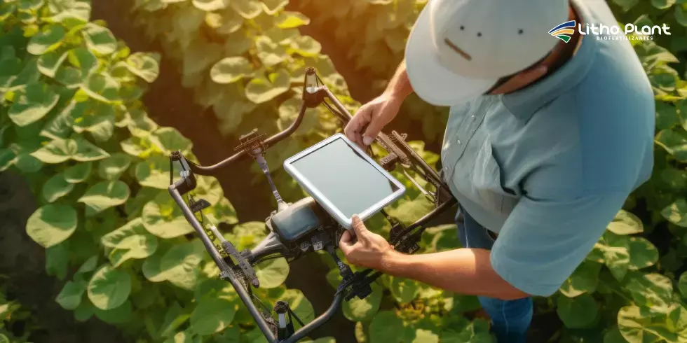
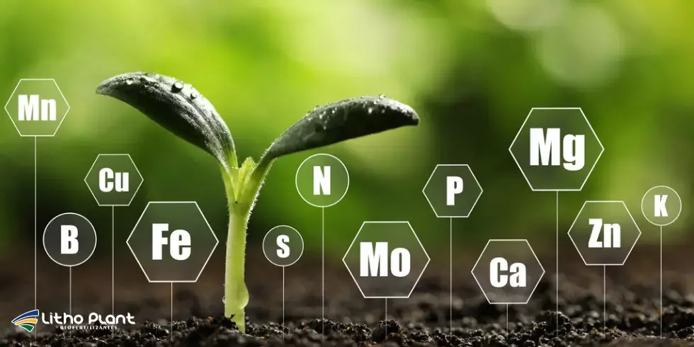
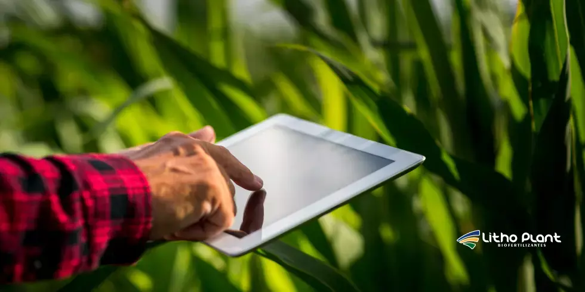

O Que Fazer Para Melhorar a Produtividade da Agricultura?
A produtividade agrícola é o pilar para o sucesso no campo, impactando diretamente a rentabilidade e a sustentabilidade da fazenda. Para alcançar melhores resultados, é necessário adotar práticas que otimizem o uso de recursos e promovam um desenvolvimento mais saudável às plantas.
Entre as soluções mais eficazes para impulsionar a produtividade, o uso de biofertilizantes se destaca, proporcionando benefícios significativos para o solo e para a qualidade das colheitas.
Neste blog, a Litho Plant, Indústria de Biofertilizantes em Linhares (ES), explora como melhorar a produtividade agrícola de forma sustentável, com ênfase no uso de biofertilizantes como aliados poderosos.
 Planejamento e manejo integrado são a base para ganhos consistentes de produtividade.
Planejamento e manejo integrado são a base para ganhos consistentes de produtividade.
Importância da produtividade na agricultura
A adoção de métodos eficientes e sustentáveis é essencial para garantir a produtividade das lavouras a longo prazo. Com o aumento das pressões ambientais e a necessidade de atender à demanda crescente por alimentos, os agricultores devem buscar soluções inovadoras para otimizar seus processos e proteger o meio ambiente.
Nesse contexto, os biofertilizantes desempenham um papel crucial, promovendo um crescimento mais saudável das plantas, ao mesmo tempo em que ajudam na conservação do solo e na redução do uso de insumos químicos.
Implementar técnicas que aumentem a eficiência do uso de água, melhorem a absorção de nutrientes e fortaleçam a resistência das culturas a pragas e doenças são métodos que, aliados aos biofertilizantes, contribuem para uma produção agrícola mais rentável e sustentável.
Técnicas modernas para aumentar a produtividade
Para uma agricultura mais produtiva, é essencial adotar técnicas que melhorem a eficiência do uso de recursos e promovam o crescimento saudável das plantas. A seguir, destacamos algumas abordagens que, quando combinadas com o uso de biofertilizantes, podem gerar ótimos resultados.

Rotação de culturas, irrigação eficiente e tecnologias de monitoramento ajudam a extrair o máximo potencial da lavoura.Rotação de culturas
A rotação de culturas é uma prática importante para manter o equilíbrio do solo, otimizar os nutrientes e reduzir a incidência de pragas. Combinada com biofertilizantes, essa técnica ajuda a restaurar e enriquecer o solo, promovendo um ciclo agrícola mais sustentável.
Uso de irrigação inteligente
A irrigação eficiente é fundamental para manter a saúde das plantas sem desperdiçar água. A utilização de biofertilizantes pode otimizar a absorção de nutrientes pelas raízes, melhorando a resistência das plantas ao estresse hídrico.
Adubação orgânica e biológica
A incorporação de biofertilizantes no processo de adubação orgânica pode aumentar a disponibilidade de nutrientes de forma mais equilibrada e natural. Isso favorece o desenvolvimento das plantas, sem comprometer a qualidade do solo e do ambiente.
Controle integrado de pragas
O uso de biofertilizantes também pode melhorar a resistência das plantas a doenças e pragas, reduzindo a necessidade de produtos químicos e promovendo uma colheita maior e mais saudável.
Tecnologia e monitoramento
A adoção de tecnologias como sensores, imagens de satélite e drones para monitoramento da lavoura proporciona dados precisos sobre as condições do solo e das plantas. Essas informações ajudam a tomar decisões mais informadas sobre o manejo da produção, aumentando a produtividade e a eficiência do processo agrícola.
Essas técnicas, quando aplicadas de forma estratégica e integradas com o uso de biofertilizantes, têm o potencial de transformar a produtividade das lavouras, garantindo um futuro mais sustentável para a agricultura.
Produtividade da agricultura e práticas sustentáveis
A relação entre produtividade agrícola e práticas sustentáveis é muito importante: é possível aumentar a produção sem prejudicar o meio ambiente. Métodos que valorizam a conservação ambiental são essenciais.
Práticas que favorecem a biodiversidade e a saúde do solo são cruciais. Elas garantem a continuidade das atividades agrícolas e ajudam a construir sistemas produtivos mais resilientes.

Produtividade e sustentabilidade caminham juntas quando o foco está na saúde do solo e na conservação ambiental.Inovações na fertirrigação
A fertirrigação é uma solução eficiente para a agricultura moderna, pois une irrigação e fertilizantes, permitindo que as plantas recebam exatamente o que precisam em momentos específicos do ciclo.
Essas tecnologias melhoram a produção agrícola e contribuem para a sustentabilidade, ao reduzir desperdícios e aumentar a eficiência. Investir em fertirrigação é uma estratégia importante para aumentar a produtividade.
Uso de biofertilizantes: abordagem inovadora para nutrir o solo e as plantas
Os biofertilizantes são uma solução natural e eficaz para aumentar a produtividade agrícola, promovendo a sustentabilidade e a saúde do solo. Diferente dos fertilizantes químicos, que podem degradar a qualidade do solo e afetar recursos hídricos, os biofertilizantes utilizam micro-organismos benéficos para enriquecer o solo e melhorar a absorção de nutrientes pelas plantas.
Ao incorporar esses produtos na rotina agrícola, os produtores podem observar uma série de benefícios que impactam diretamente na produtividade das lavouras.

Biofertilizantes renovam a atividade biológica do solo e aumentam a eficiência no uso dos nutrientes.Benefícios dos biofertilizantes para a produtividade
Melhoria da estrutura do solo
Os biofertilizantes ajudam a melhorar a estrutura do solo, tornando-o mais poroso e favorecendo a retenção de água e a aeração. Com solos mais saudáveis e bem estruturados, as raízes das plantas têm maior facilidade para se desenvolver, o que resulta em um crescimento mais vigoroso e maior produtividade.
Aumento da biodiversidade do solo
A aplicação regular de biofertilizantes promove o aumento da biodiversidade no solo, criando um ambiente propício para a atividade biológica. Isso auxilia na decomposição de matéria orgânica e na liberação de nutrientes essenciais para as plantas, como nitrogênio, fósforo e potássio.
Fortalecimento da resistência das plantas
Os biofertilizantes ajudam a fortalecer o sistema natural de defesa das plantas, tornando-as mais resistentes a doenças e pragas. Isso reduz a necessidade de pesticidas químicos e contribui para uma produção mais limpa e saudável.
Melhor eficiência na absorção de nutrientes
O uso de biofertilizantes melhora a capacidade das plantas de absorver nutrientes de maneira mais eficiente, o que se traduz em crescimento mais rápido, melhor aproveitamento de insumos e maior produtividade por área.
Sustentabilidade a longo prazo
Além de aumentar a produtividade no curto prazo, os biofertilizantes contribuem para a saúde a longo prazo do solo e das lavouras. Sua aplicação contínua permite a regeneração e preservação dos ecossistemas agrícolas, evitando a degradação do solo e promovendo práticas agrícolas mais sustentáveis.
Conclusão: produtividade com responsabilidade
Ao incorporar biofertilizantes e técnicas modernas de manejo na rotina da fazenda, os produtores podem garantir não apenas uma maior produtividade, mas também uma abordagem mais responsável com o meio ambiente.
Essa combinação representa um passo importante para um futuro agrícola mais sustentável, rentável e alinhado às exigências do mercado e da sociedade.
Descubra as soluções Litho Plant, Indústria de Biofertilizantes em Linhares – ES, e alcance resultados excepcionais. A empresa oferece uma gama de biofertilizantes, fertilizantes minerais, protetor solar para plantas e frutos e sanitizantes, desenvolvidos por profissionais com vasta qualificação e tecnologias de ponta.
Entre em contato e saiba mais sobre como aumentar a produtividade da sua lavoura com responsabilidade.